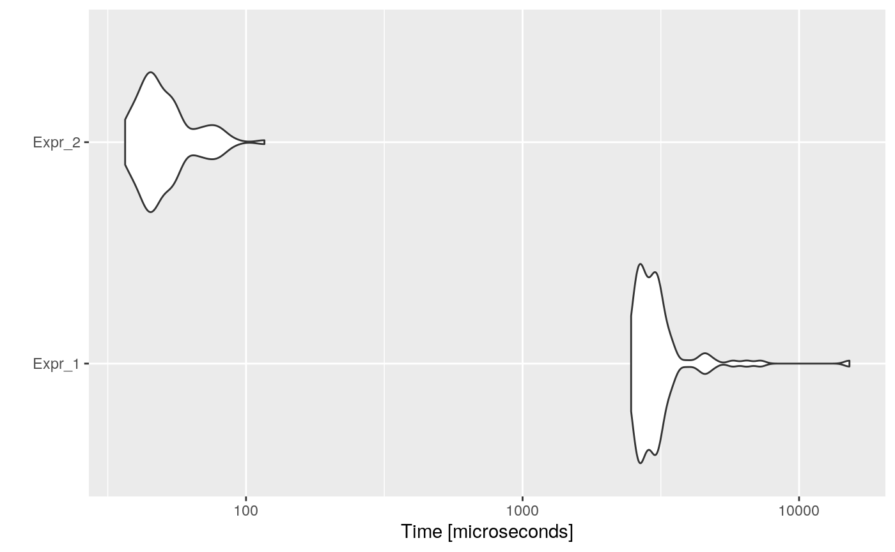

Common Subexpression Elimination is an optimization that searches for instances of identical expressions, and replaces them with a single variable holding the computed value.
For instance, consider the following code:
This code computes twice 8 + 8 + 1 + 9 * 1 ^ 8, this could be evaluated once, assigned to a new variable, and used twice. Like, for example:
Consider the following (useless) example:
code <- paste(
"a <- b <- c <- 1",
"for (i in 1:1000) {",
" a <- a ^ i ^ c",
" b <- b * i ^ c",
" c <- c + i ^ c",
"}",
sep = "\n"
)
cat(code)## a <- b <- c <- 1
## for (i in 1:1000) {
## a <- a ^ i ^ c
## b <- b * i ^ c
## c <- c + i ^ c
## }Then, the automatically optimized code would be:
## a <- b <- c <- 1
## for (i in 1:1000) {
## cs_1 <- i ^ c
## a <- a ^ cs_1
## b <- b * cs_1
## c <- c + cs_1
## }And if we measure the execution time of each one, and the speed-up:
bmark_res <- microbenchmark({
eval(parse(text = code))
}, {
eval(parse(text = opt_code))
})
autoplot(bmark_res)
## Min. 1st Qu. Median Mean 3rd Qu. Max.
## Expr_2 74.44156 64.7463 65.37001 66.3593 56.59315 103.0531The opt_common_subexpr will first detect different “environments”, i.e., separate between function definitions and parent environment. Then, for each environment it will detect all those subexpressions in common between at least two expressions. If between two occurrences of the same subexpression, a variable involved in the subexpression is reassigned or a function is called (it can change the environment), then for these two occurrences the optimization is not performed. For all those remaining common subexpressions, the first common parent expression will be detected, a new variable called cs_# will be created in the parent, and replaced in each call to the subexpression.
Consider functions as common subexpressions?
This can have an issue if the common function call returns random values.
For example:
Will be wrongly optimized to:
Use information about functions modify the parent env?
If the optimizer knows which functions modify their parent env, then function calls won’t stop optimization